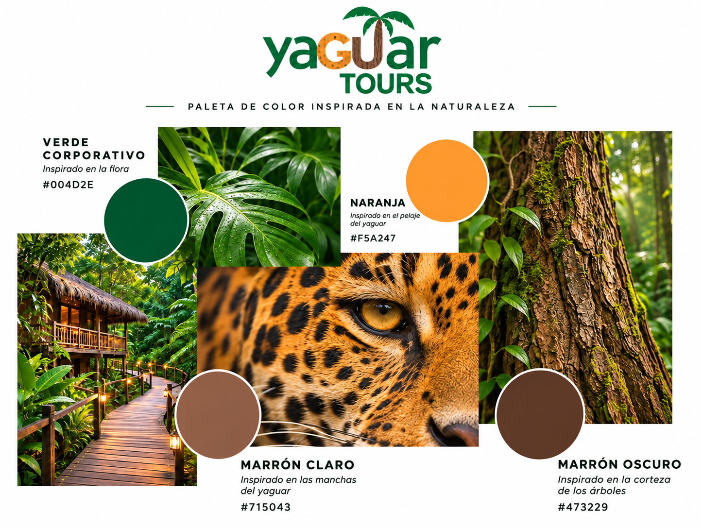
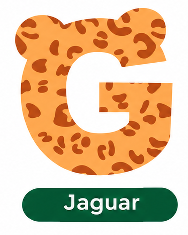
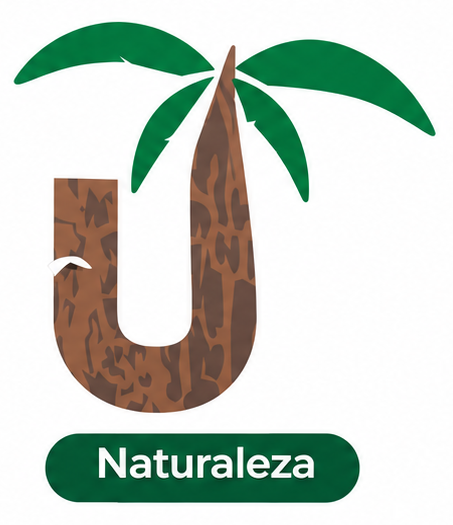
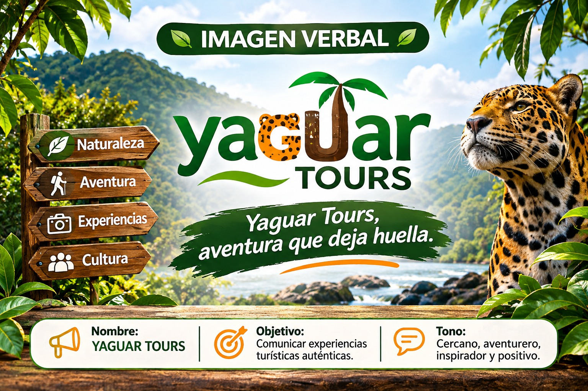

FICHA TÉCNICA DE IDENTIDAD DE
MARCA
Nombre de marca: Yaguar Tours. Rubro: Turismo – agencia de viajes y servicios turísticos. Concepto: Naturaleza, aventura y cultura de la selva central. Eslogan: «Yaguar Tours, aventura que deja huella». Estilo gráfico: Natural y aventurero contemporáneo. Personalidad: Cercana, aventurera, inspiradora, positiva y auténtica.
1. IMAGOLOGÍA

| Ficha técnica | Descripción |
|---|---|
| Definición | Estudia cómo se construye y percibe la imagen de una marca ante el público. |
| Aplicación | Construcción de la imagen corporativa propuesta de Yaguar Tours. |
| Objetivo | Transmitir una imagen natural, aventurera, confiable y auténtica. |
| Personalidad | Cercana, aventurera, inspiradora, positiva y auténtica. |
| Público objetivo | Estudiantes, trabajadores, familias y turistas nacionales interesados en experiencias de naturaleza, aventura y cultura en Pangoa. |
| Identidad visual | Isologo inspirado en el yaguar y en la biodiversidad de la selva central. |
| Colores corporativos | Verde oscuro, verde claro, verde medio, naranja y tonos marrones. |
| Percepción deseada | Que el visitante relacione la marca con Pangoa, la naturaleza, la aventura y la confianza. |
Análisis de la marca:
Yaguar Tours busca proyectar una imagen relacionada con la riqueza natural y cultural de Pangoa, en la selva central del Perú. Su identidad transmite aventura, cercanía y conexión con el entorno mediante recursos visuales inspirados en la biodiversidad y en las experiencias turísticas.
Resultado esperado: Una marca reconocible que transmita confianza, autenticidad e identidad territorial.
2. ICONOLOGÍA

| Ficha técnica | Descripción |
|---|---|
| Definición | Estudia e interpreta los significados simbólicos y culturales de las imágenes. |
| Aplicación | Uso de símbolos relacionados con el yaguar, la naturaleza y el turismo de Pangoa. |
| Objetivo | Transmitir identidad, aventura y conexión con la naturaleza mediante elementos gráficos. |
| Símbolo principal | Letra G inspirada en el jaguar y letra U integrada con una palmera. |
| Elementos secundarios | Manchas del jaguar en la G; tronco y hojas de palmera en la U. |
| Estilo gráfico | Formas orgánicas y elementos gráficos vinculados a la selva. |
| Significado | Unir fauna y flora de la selva central en las letras del isologo. |
Interpretación de los símbolos:
| Símbolo | Significado |
|---|---|
|
G — Jaguar
Símbolo G de jaguar
Copia la imagen con el nombre indicado en la carpeta img/
 |
La letra G representa al jaguar, símbolo de la fauna selvática, la fuerza y el espíritu de aventura. |
|
U — Palmera
Símbolo U de palmera
Copia la imagen con el nombre indicado en la carpeta img/
 |
La letra U incorpora la palmera y su tronco; representa la flora, la biodiversidad y la conexión con la naturaleza. |
Análisis de la marca:
La iconología de Yaguar Tours se basa en dos elementos principales: la G, asociada al jaguar y la fauna de la selva, y la U, que integra una palmera como expresión de la flora. Ambos símbolos refuerzan el vínculo de la marca con la biodiversidad de Pangoa.
Resultado esperado: Una identidad gráfica con símbolos reconocibles y significados relacionados con la esencia de Yaguar Tours.
3. IMAGEN VERBAL

| Ficha técnica | Descripción |
|---|---|
| Definición | Conjunto de palabras, frases, mensajes y expresiones que construyen la identidad comunicativa de una marca. |
| Aplicación | Nombre comercial, eslogan, publicidad, material promocional y publicaciones digitales. |
| Objetivo | Comunicar la personalidad y los valores de Yaguar Tours mediante palabras. |
| Nombre | YAGUAR TOURS. |
| Eslogan | «Yaguar Tours, aventura que deja huella». |
| Tono comunicativo | Cercano, aventurero, inspirador, positivo y auténtico. |
| Palabras clave | Naturaleza, aventura, Pangoa, cultura, experiencias, selva y huella. |
| Tipografía propuesta | Arial para títulos y textos informativos, de acuerdo con la identidad definida. |
| Estilo verbal | Sencillo, cercano, emotivo e inspirador. |
Análisis de la marca:
La imagen verbal de Yaguar Tours busca transmitir experiencias relacionadas con la naturaleza, la aventura y la cultura de Pangoa. Utiliza expresiones cercanas e inspiradoras que invitan a los visitantes a descubrir el territorio y refuerzan la identidad de la marca.
Ejemplo de mensaje publicitario:
«Descubre la naturaleza y vive nuevas experiencias en Pangoa. Yaguar Tours, aventura que deja huella».
Resultado esperado: Una comunicación coherente, cercana y fácil de recordar, que permita identificar la personalidad de la marca.
EJERCICIO CONVERTIR UNA PALABRA O FRASE EN UNA IMAGEN VISUAL

4. CUADRO COMPARATIVO GENERAL
| Concepto | Función en Yaguar Tours |
|---|---|
| Imagología | Construye la percepción e imagen de la marca. |
| Iconología | Da significado a los símbolos y elementos gráficos relacionados con la naturaleza. |
| Imagen verbal | Comunica la personalidad mediante palabras y mensajes. |
5. CONCLUSIÓN
Yaguar Tours integra la imagología, iconología e imagen verbal para desarrollar una identidad corporativa coherente. La imagología permite proyectar una imagen natural y aventurera; la iconología aporta significado mediante símbolos inspirados en el yaguar y la biodiversidad; y la imagen verbal transmite los valores de la marca mediante su nombre, eslogan y mensajes publicitarios.
De esta manera, Yaguar Tours busca representar la unión entre el turismo, la naturaleza y la cultura de Pangoa, creando una identidad visual y comunicativa propia.
Ficha elaborada para un proyecto académico de marca conceptual.